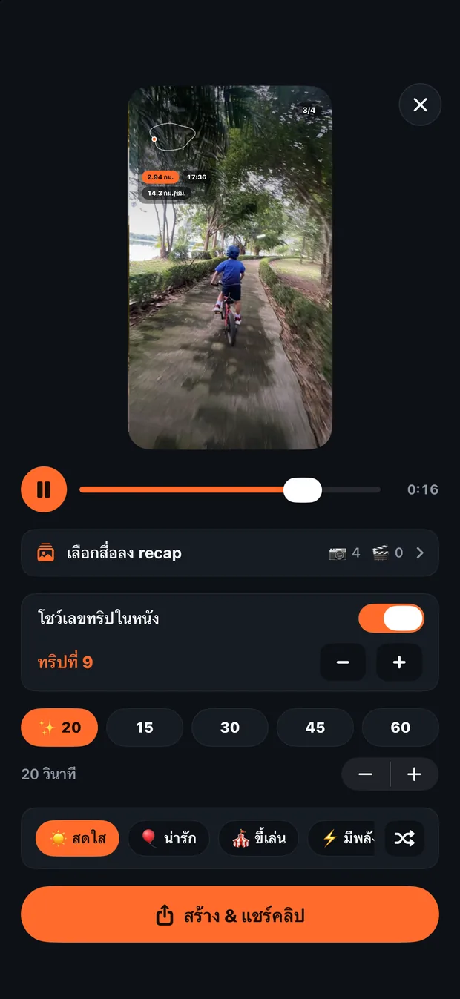

15–60 วิเลือกความยาวได้
🎵 พร้อมเพลงทำในเครื่อง
01 · หนังสั้นอัตโนมัติ
ปั่นเสร็จ
ปั่นเสร็จ
ได้หนังสั้นทันที
แอปร้อยเส้นทาง สถิติ รูป และคลิปที่ถ่ายระหว่างทางเป็นวิดีโอ recap แนวตั้ง พร้อมเพลงประกอบ ส่งเข้ากลุ่มครอบครัวได้เลย
- เส้นทางวาดตามจริง พร้อมรูปที่ปักไว้ตามจุด
- เลือกธีมเพลง สุ่มใหม่ หรือปิดเพลงก็ได้
- ตัดคลิปเฉพาะช่วงเด็ดได้เอง